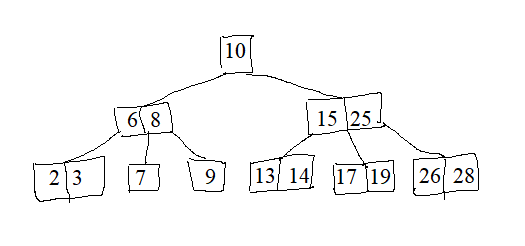
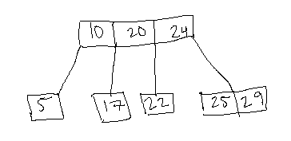

Over the last few years I've written notes on various computer science topics. For the most part these were written with the intent of teaching other students so parts may be informal and lack thorough explanation.
B-Trees are used to reduce the height of a tree as you add to it i.e. making sure the tree is not "spindly." They are self-balancing trees
B-Trees of order L=2 are 2-3 Trees and B-Trees of order L=3 are 2-3-4 Trees (2-4 Trees).
2-3 Trees have at most 2 elements per node and at most 3 children per node.
2-3-4 Trees have at most 3 elements per node and at most 4 children per node.
2-3 Tree:

2-3-4 Tree:

Note: you can have other types of elements in your B-Tree such as letters or arbitrary objects (so long as these objects can be ordered).
Algorithm for searching for an element of a 2-3 Tree:
- (Similar to searching in a BST)
- Look at each node and determine which child to continur your search in
- Repeat until element is found
Algorithm for
inserting an element into a 2-3 Tree:
- Insert element into the leaf node that it should be added to
- If node is not full
- Add that element to the node
- If leaf node is full
- Split the elements of the full node plus the new element into two child nodes with the median of the three elements acting as the parent
- If possible, add this element to the original parent node
- If not possible, continue this splitting process upwards
- If the process continues to the root node create a new node above the root
- Note: this is the only time where the height of the tree can be increased
Algorithm for
deleting an element from a 2-3 Tree:
- (There are a few different algorithms)
- (It's hard)
B-Tree Invariants (things that are always true):
- All leaf nodes are the same distance from the root
- If a non-leaf node contains n elements, it has n+1 children
- Every node (other than the root) is at least half full
- The root has at least two children as long as the height is 1
Time Complexity:
Searching for a node:
O(logn)
Insertion:
O(logn)
Deletion:
O(logn)
The Euclidean Minimum Spanning Tree of a set of points is the MST of points where edge weights are the Euclidean distances between the points defining the edge.
Naively you can compute the EMST by creating a complete graph the set of points where the edge weights are the Euclidean distances between those two points and then run Prim's or Kruskal's on the resulting graph.
Space Complexity: O(n^2)
Time Complexity is O(n^2)
A more efficient strategy is to note that the Delaunay Triangulation contains the EMST and an algorithm for caluculating the Deluanay Triangulation runs in O(nlogn). Simply run Prim's or Kruskal's on the Delaunay Triangulation. The resulting for computing the EMST run in O(nlogn).